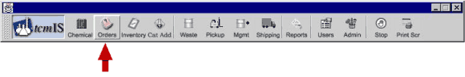
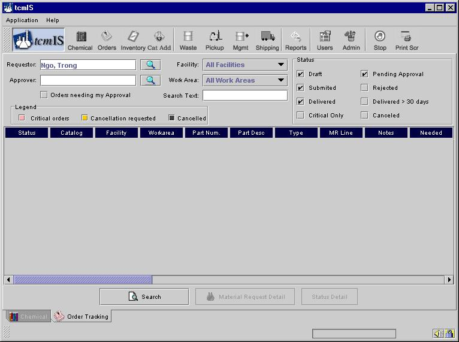
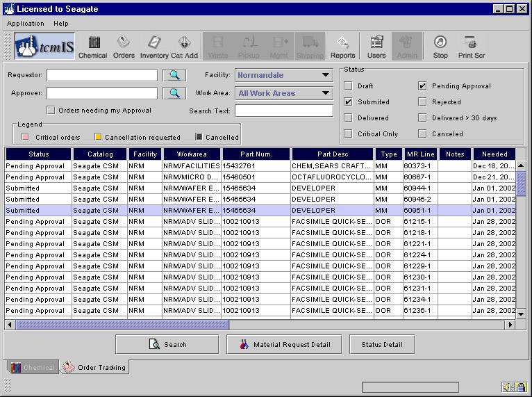
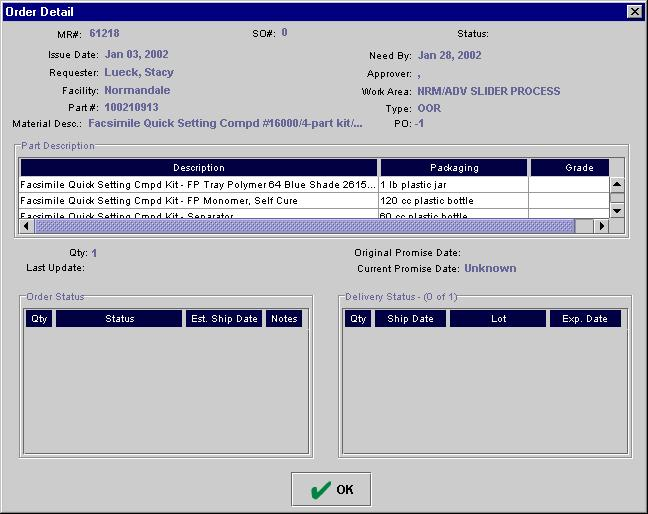

You can move to the Order Tracking screen by clicking on the Chemical button as shown below.

After you’ve finished ordering, tcmIS leaves you in the Material Request tab. If you want to find out the status of your order, open the Applications menu and click on ChemicalOrder Tracking. Or, you can click on the Orders icon.

The Order Tracking tab represents a new work process. Here you can search for orders and view their status. You can search for chemicals by Requestor, Part Number, Facility, Work Area, Order Status, etc.
The Requestor line allows you to search for chemicals requested by a specific individual. Enter the name of the person requesting the chemical, which could be you, and then click on Search. You can refine your search by checking any of the boxes in the Status area. If you are an Approver or Releaser, you can find the Material Requests that are in your queue waiting your attention.
Search for the requests by clicking on the search button. A typical screen after the search would look like below.

To examine the Material Request for the particular line item, click on the line item. Then, click on "Material Request Detail".
If you are interested in learning the status of your order, simply click on the line item you are interested in and then click on Status Detail.

STATUS DETAIL DEFINITIONS